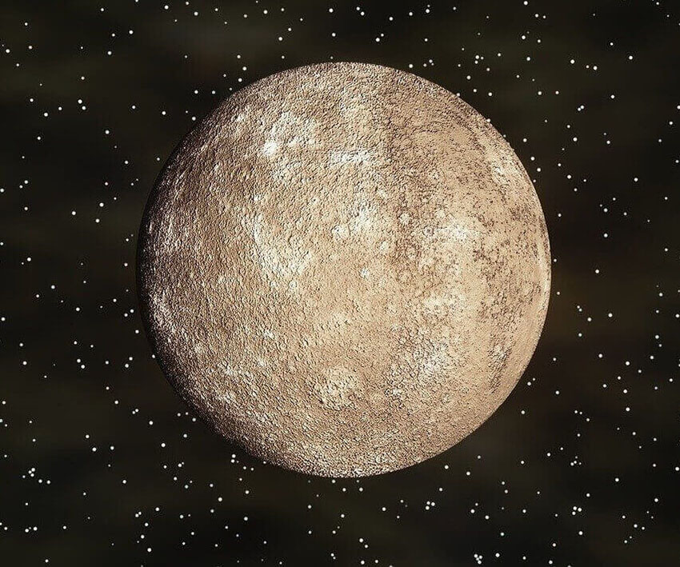

Mercúrio é o planeta mais próximo do Sol e o menor do Sistema Solar. Tem uma superfície rochosa e craterada, semelhante à da Lua.
Características:
- É o planeta mais próximo do Sol
- Tem o ano mais curto do Sistema Solar, com 88 dias terrestres
- Tem um dia solar muito longo, equivalente a 176 dias terrestres
- Não tem estações do ano
- Tem uma superfície com crateras, dorsas, montes, planícies, escarpas e vales
- Tem uma atmosfera muito fina, composta de hélio e sódio
- Tem um campo magnético, embora não tão forte quanto o da Terra
- Tem uma alta densidade, de 5.44 g/cm3
Formação:
- Foi bombardeado por cometas e asteroides durante e logo após a sua formação, há 4,6 bilhões de anos
- Teve atividade vulcânica e bacias como a Caloris foram preenchidas por magma
Observação:
- Pode ser visto da Terra a olho nu, mas apenas antes do amanhecer e pouco depois do entardecer
- As primeiras observações telescópicas de Mercúrio foram feitas por Galileu Galilei em 1610
